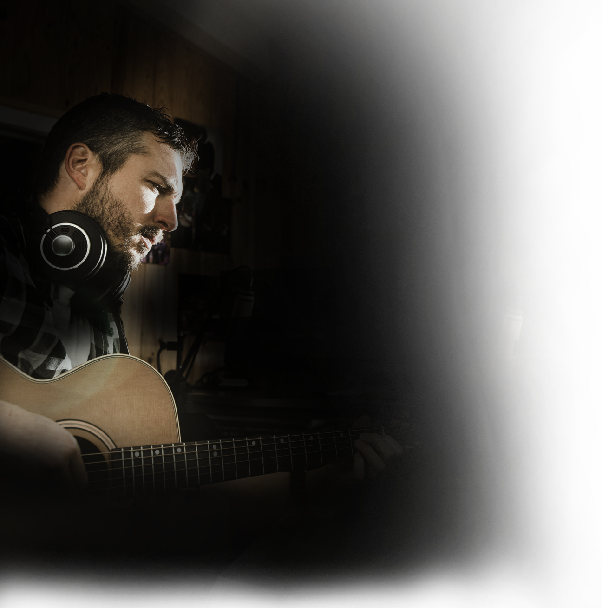
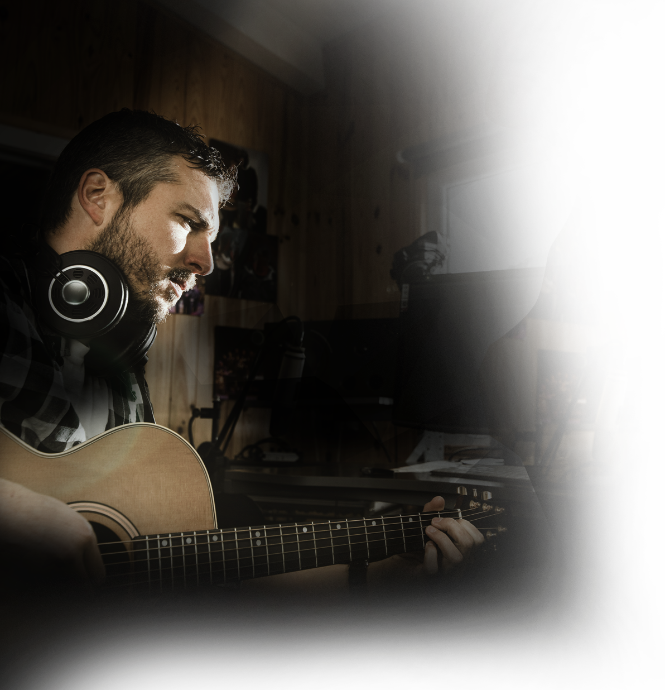

Getting involved with us is a genuine experience and we have our live streaming events and networking event opportunities that you can get involved in! Keep up to date on what’s coming up next right here!


Timeline:
Saturday, June 22nd, 2019 - The AristXP.com Social Network goes live. Artists can complete their profiles and fans can register to the network.
Monday, July 1st, 2019 - Competitions are officially open for entry.
Monday, July 15th, 2019 - Enrollment is closed.
Monday, July 15th, 2019 - Enrollment is closed.
Saturday, July 20th, 2019 - Competitions start for the first AudioDeadline.com Experience on the ArtistXP.com Social Network. (Entries must be in by the 15th)
Sunday, September 1st, 2019 - Competitions are over and all the winners are announced, and interviews are set up
Saturday, September 14th, 2019 -The AudioDeadline.com Experience Premier Live Streaming Event!
Saturday, September 21st, 2019 – We will hold our second networking event in Los Angeles, CA to announce special guests and other features of the coming July live stream. Location to be announced.
Tuesday, October 1st, 2019 - Competitions are officially open for entry.
Tuesday, October 15th, 2019 - Enrollment is closed.
Sunday, October 20th, 2019 - Competitions start for the second AudioDeadline.com Experience on the ArtistXP.com Social Network. (Entries must be in by the 15th)
Sunday, December 1st, 2019 -Competitions are over and all the winners are announced, and interviews are set up.
Saturday, December 14th, 2019 - The AudioDeadline.com Experience second Live Streaming Event!
Saturday, December 21st, 2019 - We will hold our third networking event in Los Angeles, CA to announce special guests and other features of the coming October live stream. Location to be announced.
Wednesday, January 1st, 2020 - Competitions are officially open for entry
Wednesday, January 15th, 2020 - Enrollment is closed.
Monday, January 20th, 2020 - Competitions start for the third AudioDeadline.com Experience on the ArtistXP.com Social Network. (Entries must be in by the 15th)
Sunday, March 1st, 2020 - Competitions are over and all the winners are announced, and interviews are set up.
Saturday, March 14th, 2020 - The AudioDeadline.com Experience third Live Streaming Event!
Saturday, March 21st, 2020 - We will hold our fourth networking event in Los Angeles, CA to announce special guests and other features of the coming January live stream. Location to be announced.
Wednesday, April 1st, 2020 - Competitions are officially open for entry
Wednesday, April 15th, 2020Enrollment is closed.
Monday, April 20th, 2020 - Competitions start for the third AudioDeadline.com Experience on the ArtistXP.com Social Network. (Entries must be in by the 15th).
Monday, June 1st, 2020 - Competitions are over and all the winners are announced, and interviews are set up.
Saturday, June 13th, 2020 - The AudioDeadline.com Experience fourth Live Streaming Event!
Saturday, June 20th, 2020 - We will hold our fifth networking event in Los Angeles, CA to announce special guests and other features of the coming January live stream. Location to be announced.
Wednesday, July 1st, 2020 - Competitions are officially open for entry.
Wednesday, July 15th, 2020 - Enrollment is closed.
Monday, July 20th, 2020 - Competitions start for the fourth AudioDeadline.com Experience on the ArtistXP.com Social Network. (Entries must be in by the 15th)
Tuesday, September 1st, 2020 - Competitions are over and all the winners are announced, and interviews are set up.
Saturday, September 12th, 2020 - The AudioDeadline.com Experience fifth Live Streaming Event!
Saturday, September 19th, 2020 - We will hold our sixth networking event in Los Angeles, CA to announce special guests and other features of the coming April live stream. Location to be announced.